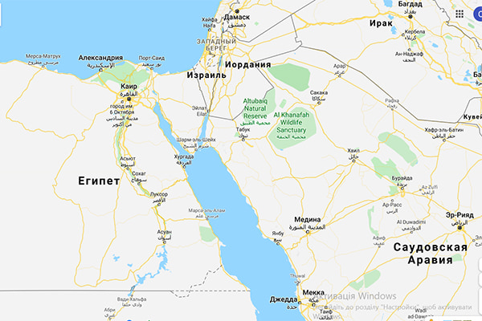
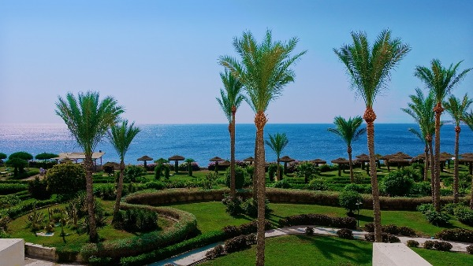

О Египте
Египет — одно из востребованных направлений для туризма. Ежегодно страну посещает более 7 млн человек. Это то место, где лучшее сочетание цены и качества дарит незабываемый отдых. На нашем сайте можно «поймать» горящие путевки в Египет на двоих, что поможет сэкономить на отпуске.
Египет расположен на северо-востоке Африки и Синайском полуострове. Омывается двумя морями: Средиземным и Красным, что соединены между собой Суэцким каналом. Красное море входит в десяток самых чистых морей на планете. Поэтому дешевые путевки в Египет пользуются спросом среди дайверов, которые приезжают сюда наслаждаться великолепием богатого подводного мира.
История страны началась 4 тыс. лет до н. э. Тогда существовало около 20 городов, которые в скором времени объединились в единое государство. Древняя египетская цивилизация была одной из самых могущественных и по сей день оставила сотни достопримечательностей. Позже, из-за различных вторжений, войн и междоусобиц среди правителей, страна утратила могущество и была захвачена интервентами. Только в 1953 году Египет получил независимость и статус республики. С тех пор начал постепенно развиваться туризм, как одна из важных составляющих экономики страны.
Туристы посещают Египет круглый год. Благодаря тропическому климату межсезонные изменения погоды незначительные. Наиболее комфортный температурный режим устанавливается весной и осенью. Это периоды, когда поездка в Египет может быть максимально насыщенной разными активностями в отелях и за их пределами: спортивными и водными развлечениями, экскурсиями на дальние расстояния и морскими прогулками. Летом здесь жарко, температура достигает +50 °С. В это время спрос на туры падает, и горящие в Египет «поймать» несложно. А зимой ветрено и периодически дождит, что отражается на туристическом спросе: до Нового года и в середине января цена путевки в Египет снижается.
Египет на карте
Популярные курорты
Хургада — расположен на побережье Красного моря. Имеет три основных района. Купить горящий тур в Египет — значит получить оптимальное сочетание цены и качества. Из Хургады удобнее всего посетить храмовый комплекс Луксор, храм Эдфу и Долину Царей. Курорт подходит как для шумных молодежных компаний, так и для семейного отпуска. Сезон для пляжного отдыха в Египте здесь длится с марта по декабрь.
Шарм-эль-Шейх — расположен на Синайском полуострове, имеет пять районов, и все они у моря. Лучшее место для неторопливого пляжного отдыха и снорклинга. Коралловый риф подходит к самому берегу. Здесь знаменитый исследователь Жак-Ив Кусто со своей командой снимал передачи о подводной жизни. Цена пляжного отдыха в Египте на этом курорте зависит от сезона.
Нувейба — еще один комфортабельный курорт Синайского полуострова. Он расположен недалеко от Израиля и паромной переправы в Иорданию. Купить тур в Египет на двоих на этот курорт стоит, если вы хотите посетить еще одну страну.
Марса-Алам — самый южный и молодой курорт Египта на побережье Красного моря. Примечателен коралловыми рифами и песчаными пляжами. Отличное место для дайвинга с десятком интересных дайв-сайтов. Здесь тихо и спокойно, а стоимость путевки в Египет в четырех- и пятизвездочные резорты Марса-Алама относительно невысокая, но это временно. Курорт активно набирает популярность среди туристов.
Каир — столица Арабской Республики. Привлекает туристов достопримечательностями Древнего Египта и средневековой арабской архитектурой. Именно на окраине этого города покоится статуя сфинкса и старинные пирамиды. Каир славится базарами, один из которых берет начало в далеком 1382 году.
Эль-Гуна — это сеть островов, соединенных между собой мостиками. Главный вид транспорта здесь — моторная лодка. Это круглогодичный курорт. Выбрать тур в Египет в Эль-Гуну стоит молодежи, которая любит активный отдых и приключения.
Дахаб — туристическая зона, которая тянется вдоль моря на несколько километров, излюбленное место дайверов и серферов. Также курорт подходит для экотуризма и кайтинга. Славится золотыми песчаными пляжами с удобным плавным заходом в воду и удаленностью коралловых рифов от берега. Благодаря таким условиям, заказать тур в Египет в один из комфортабельных отелей Дахаба стоит даже семьям с самыми юными путешественниками в составе.
Сафага — небольшой городок, где главным развлечением является виндсерфинг. Песчаные пляжи немноголюдны даже в разгар сезона, поэтому место также подходит для семейного отдыха. К тому же, отели относятся к бюджетной категории 3★ и 4★, поэтому и самые дешевые туры в Египет продаются тоже в Сафагу.
Александрия — город, который занимает второе место по величине в стране. Курорт, неизменно привлекающий ценителей истории, культуры и архитектуры. Городские отели и роскошные резорты непосредственно на море, форт и арабский рынок — все это стоит того, чтобы прилететь сюда.
Таба — компактный курортный городок в Южном Синае. Тут невероятные по красоте пляжи, а кроме того, туристов прельщает близость Израиля, Иордании и Саудовской Аравии. Интересно здесь будет фанатам фридайвинга (погружения на большую глубину без акваланга) и других видов подводного плавания, а также любителям гольфа среди пустыни. Тур путевки в Египет в отели Табы пока только набирают популярности среди украинских путешественников, поэтому цены путевок в любое время года достаточно демократичны.
Мерса-Матрух — курорт на границе с Ливией, пользуется популярностью у иностранцев с не столь давнего времени. Курорт древний, просто до недавних пор на нем отдыхали сами египтяне. Тут есть Ливийский рынок, белоснежные пляжи с мягким песком и много отелей на любой вкус.
